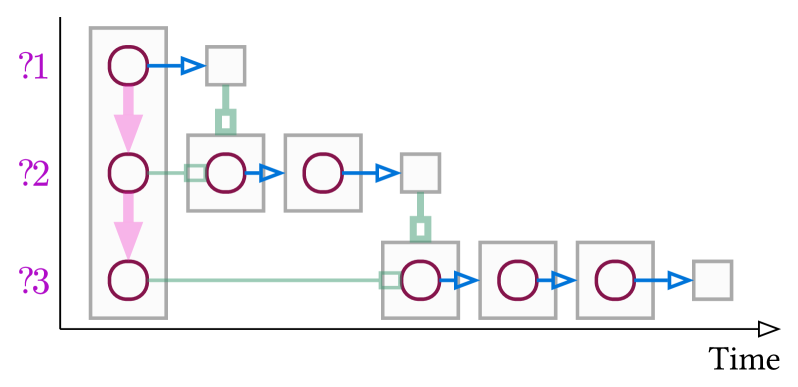
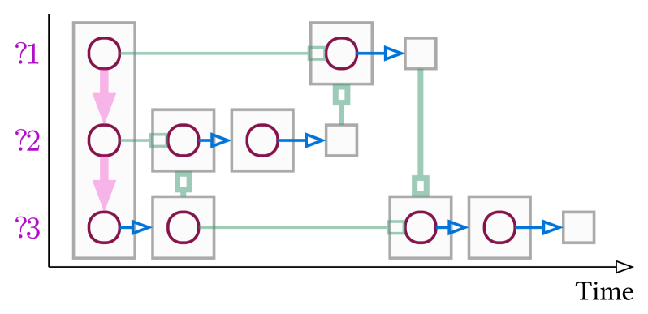

Introduces atomic tactics, the ExprGraph structure, and a GNN-based prover for Lean evaluated on Mathlib.
Abstract
In Machine-Assisted Theorem Proving, a theorem proving agent searches for a sequence of expressions and tactics that can prove a conjecture in a proof assistant. In this work, we introduce several novel concepts and capabilities to address obstacles faced by machine-assisted theorem proving. We first present a set of \textbf{atomic tactics}, a small finite set of tactics capable of proving any provable statement in Lean. We then introduce a \textbf{transposing atomization} algorithm which turns arbitrary proof expressions into a series of atomic tactics. We next introduce the \textbf{ExprGraph} data structure, which provides a succinct representation for Lean expressions. Finally, we present the \textbf{Nazrin Prover}, a graph neural network-based theorem proving agent using atomic tactics and ExprGraph. Nazrin circumvents many challenges faced by existing proving agents by exclusively dispatching atomic tactics, and it is robust enough to both train and evaluate on consumer-grade hardware. We demonstrate the potential of tools like Nazrin using theorems from Lean's standard library and from Mathlib.
Problem
Machine-assisted theorem proving in Lean requires effective proof search over large tactic spaces. Existing approaches use tree search over the full tactic language, leading to high branching factors and difficulty in generalizing learned proof strategies across different proof contexts.
Approach
The authors introduce Nazrin, which defines a set of atomic tactics sufficient to prove any provable statement in Lean. They present a transposing atomization algorithm that converts arbitrary proof expressions into sequences of atomic tactics, creating a uniform representation. They then introduce ExprGraph, a graph-based representation of Lean expressions suitable for graph neural networks. A GNN-based prover (Nazrin Prover) is trained on atomized proofs to predict the next atomic tactic given the current proof state.

(a) Visualization of Proof

(b) Visualization of State-Level Transposed Proof
Results
The atomization algorithm succeeds on approximately 58% of 170,180 user-defined theorems in Lean's standard library and Mathlib. Nazrin Prover trained on standard library slice 1 achieves 57% accuracy on slice 2; trained on Mathlib slice 3, it reaches 34% on slice 4. The prover can discharge theorems that Aesop and Grind automation tactics cannot.